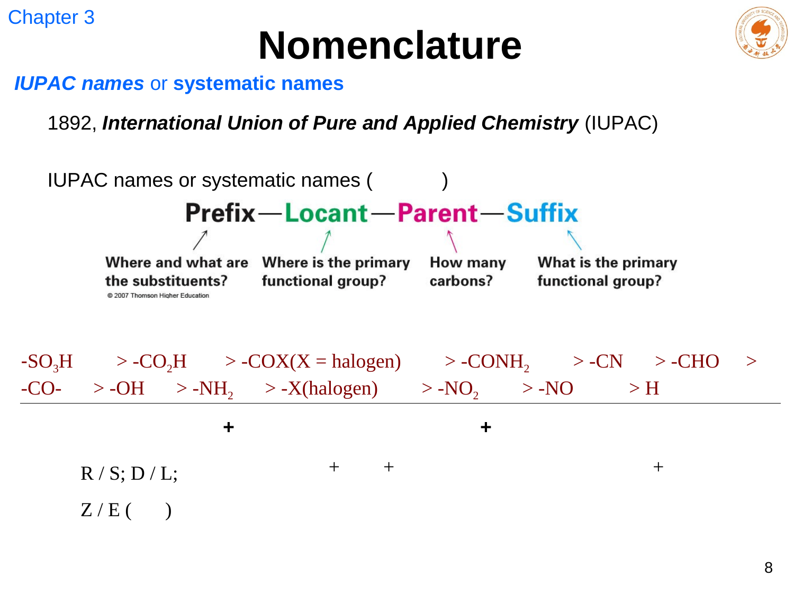
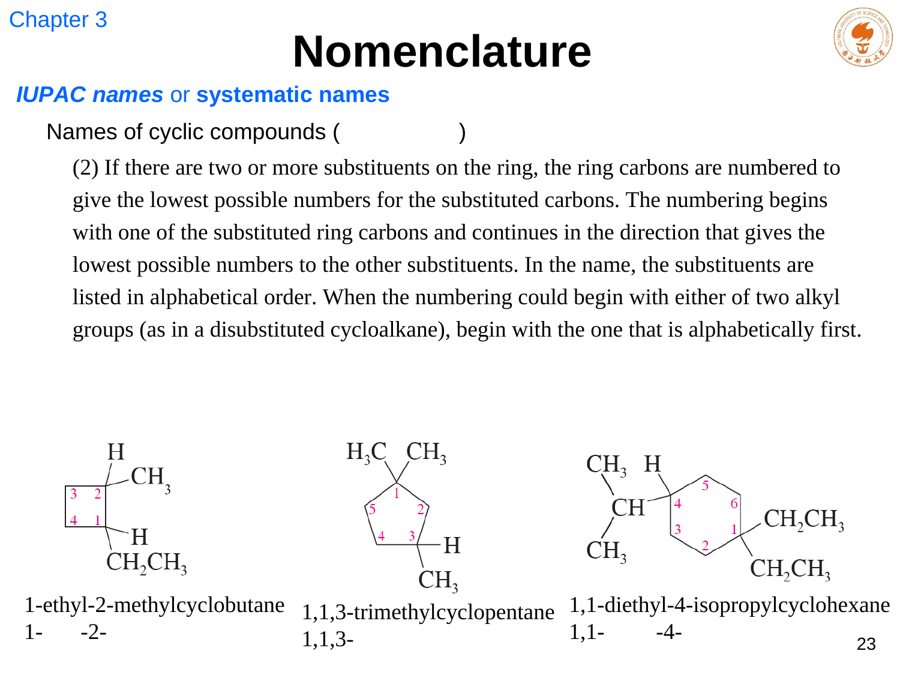
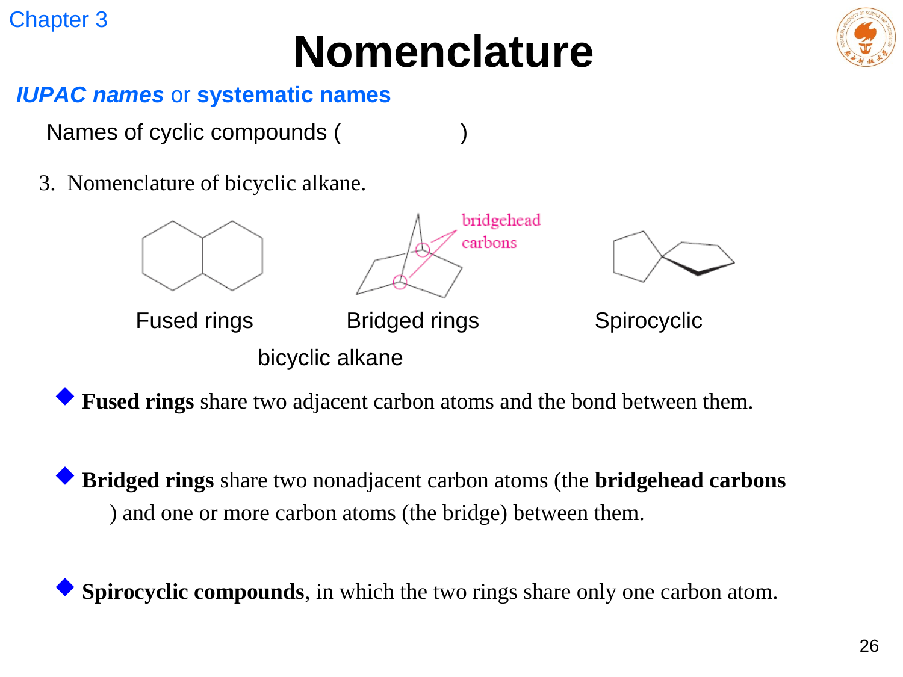

methane、ethane、propane、butane、pentane、hexane、heptane、octane、nonane、decane；中文对应甲至癸烷。
LECTURE 03 · CHAPTER 3
烷烃、环烷烃与系统命名
Classification, IUPAC nomenclature, cycloalkanes and polycyclic frameworks
课堂速记修订
课件结构图
命名流程
中英文规则对照
1. 烃与烷烃
烃（hydrocarbon）只含碳和氢。烷烃（alkane）只含 C–C 单键和 C–H 键；无环、无支链的烷烃常称直链烷烃。由于不含 C=C 或 C≡C，它属于饱和烃。环烷烃也是只含单键的烃，但分子式比对应开链烷烃少 H₂。
开链烷烃通式：
C
n
H
2n+2
n 是碳原子数。相邻正构烷烃仅相差一个 –CH₂– 单元，构成同系物系列；它们物理性质通常呈规律递变，化学反应类型相近。
n- 表示 normal，常用来区分直链异构体；iso-、neo- 是常用名的一部分，但系统命名应优先按 IUPAC 规则处理碳骨架。
2. IUPAC 名称的骨架

基础格式可以记成：位次–取代基 + 母体。更复杂的分子还需加入构型、主官能团后缀和相应位次。当前烷烃部分先把“最长碳链、编号、取代基、排序、拼写”做扎实。
选择最长的连续碳链；若最长链并列，选择取代基数更多的一条。最长链不一定画成直线，必须沿着连接关系逐条追踪。
从更靠近第一个取代基的一端开始，使取代基获得最低的一组位次；不要只比较一个数字，而要按出现的第一个差异比较。
支链作为烷基命名，并写出它连接到母链的碳号。相同取代基合并，用 di-、tri-、tetra- 等倍数前缀。
位次之间用逗号，位次与文字间用短横线。英文按字母序排列取代基，忽略 di-、tri- 等倍数前缀；iso- 计入字母序，n-、sec-、tert- 不计。
3. 取代基与碳原子级数
取代基（substituent）是从母体上“拿走一个 H 后”留下并连到主链的部分。伯、仲、叔、季碳并不按它连了几个任意原子判断，而只数它直接相连的碳原子数：1、2、3、4 个分别为 1°、2°、3°、4° 碳。
复杂取代基
从与主链相连的“头碳”编号，选择其中最长链作取代基母体，把支链放入括号。例如 6-(1,1,3-trimethylbutyl)undecane。括号只包住复杂取代基，不把它和主链混成同一条连续编号链。
4. 中英文系统命名模板：先拆件，再装配
一个系统名称不是“把中文或英文直译出来”，而是把同一份结构信息按固定顺序编码。写题时先在草稿上拆成构型 + 位次 + 取代基 + 母体（+ 官能团后缀），最后再分别套中文、英文模板。下面的内容以当前章节的烷烃、环烷烃为主；后续含官能团时，只需把母体的 -ane 换成优先官能团的后缀。
中文模板
［构型描述符］-位次-取代基名称 + 母体名称
例：（3R）-3-乙基-2-甲基己烷
括号内的构型描述符放在全名最前；中文取代基一般按顺序规则排列。
English template
[(configuration)-]locant(s)-substituent(s)parent
Example: (3R)-3-ethyl-2-methylhexane
English has no spaces. Use commas only between numbers, hyphens between a number and a word, and parentheses around a complex substituent or stereodescriptor.
告诉读者信息出现在母体的第几个原子上。多个相同信息的位次用逗号分隔，如 2,2-；位次与名称之间用短横线，如 3-ethyl。
烷基名由母体词根加 -yl 构成：methyl、ethyl、propyl。相同取代基用 di-、tri-、tetra- 合并；这些倍数前缀不参加英文排序。
当前为最长链或适当的环：hexane、cyclohexane。母体是名称的“落脚点”，决定主编号体系和最后的词尾。
若需要区分镜像体或双键几何异构，把 (R)、(S)、(E)、(Z) 放在名称最前。R/S 可用于任意可定义的手性中心；L/D 仅用于与甘油醛相对构型有关的特定体系。
英文系统名是一串连续的名称，不加空格。对开链烷烃可按“locant(s)-substituent(s) + parent”来写：3-ethyl-2-methylhexane。数字之间用逗号，如 2,3-dimethyl；数字与文字之间用短横线，如 3-ethyl；最后一个取代基名和母体直接相连，不再加短横线。含复杂取代基时用圆括号把它整体隔开，例如 5-(1-ethyl-2-methylpropyl)nonane。
meth-, eth-, prop-, but-, pent-, hex-, hept-, oct-, non-, dec- 分别表示 1–10 个碳；烷烃后缀为 -ane。作为取代基时把 -ane 改为 -yl：butane → butyl，cyclohexane → cyclohexyl。
di-, tri-, tetra-, penta-, hexa- 只说明相同取代基的数量，不参与英文的字母排序。因此 3-ethyl-2,2-dimethylhexane 中 ethyl 在 methyl 前。
将不同取代基按名称首字母排：ethyl 在 methyl 前，bromo 在 chloro 前。若用完整系统名，应按完整名称排序，例如 propan-2-yl 按 p 排。
传统写法中 iso- 计入排序，故 isobutyl 按 i；n-, sec- 与 tert- 不计入排序，故 n-butyl、sec-butyl、tert-butyl 都按 b。考试先遵循本课的教材规范。
常用缩写完整英文名更系统的写法 / 提醒
Memethyl甲基；结构式和机理图常用
Etethyl乙基
n-Pr / i-Prn-propyl / isopropylpropan-1-yl / propan-2-yl
n-Bu / s-Bun-butyl / sec-butylbutan-1-yl / butan-2-yl
i-Bu / t-Buisobutyl / tert-butyl2-methylpropyl / 1,1-dimethylethyl
c-Pr / c-Bucyclopropyl / cyclobutyl环烷基的结构式缩写
Ph / Bnphenyl / benzyl后续芳香烃章节常见，不是环己基
缩写的使用边界
Me、Et、i-Pr、t-Bu 很适合画结构、写反应式和课堂板书；正式英文系统命名通常应把它们展开，或改用更系统的 propan-2-yl、2-methylpropyl 等形式。尤其不要把 tBu 连写进正式名称：作为传统名称应写 tert-butyl，作为结构图标注才常写 t-Bu。
四类常见名称，逐件套模板
A. 开链、不同取代基
3-乙基-2-甲基己烷
3-ethyl-2-methylhexane
拆解：3 / ethyl（乙基）＋ 2 / methyl（甲基）＋ hexane（六碳母链）。英文按 e 在 m 前排列；中文按课程所用顺序规则写取代基。
B. 开链、相同取代基
2,2-二甲基丁烷
2,2-dimethylbutane
拆解：2,2 / di-methyl（二个甲基）＋ butane（四碳母链）。di- 只表达数量：它不把 methyl 排到 ethyl 前或后。
C. 复杂支链
5-(1-乙基-2-甲基丙基)壬烷
5-(1-ethyl-2-methylpropyl)nonane
拆解：主链为 nonane；5 位连着一个独立编号的取代基。括号告诉读者：1-ethyl-2-methylpropyl 是一个整体，内部编号从与主链相连的“头碳”开始。
D. 环作母体
1-乙基-3-甲基环己烷
1-ethyl-3-methylcyclohexane
拆解：cyclohexane 是母体；从乙基所在碳定为 1 位并选方向，使甲基得到 3 位。只有一个取代基时通常直接写 ethylcyclohexane / 乙基环己烷，不写 1-。
E. 环作取代基
3-环丙基庚烷
3-cyclopropylheptane
拆解：开链含七个碳，故以 heptane 为母体；三元环去掉一个 H 后成为 cyclopropyl（环丙基）。这与“环作母体”的命名方向相反。
F. 带绝对构型
（3R）-3-乙基-2-甲基己烷
(3R)-3-ethyl-2-methylhexane
拆解：(3R) 指母体 3 位手性中心的绝对构型；其余部分仍按普通系统命名装配。若有两个中心，可写 (2R,3S)-…；R/S 后不另加“型”。
中文与英文不能简单互译的点
二者的“母体—位次—取代基”信息完全对应，但取代基排序的书写规则可能不同；写英文时始终先检查字母序，写中文时遵循课程采用的顺序规则。考试答案若要求 IUPAC 英文名，应优先使用完整英文取代基名，而不是把结构简写直接拼进名称。
5. CIP 顺序规则与中英文名称
Cahn–Ingold–Prelog（CIP）顺序规则比较直接相连原子的原子序数；若相同，再逐层比较下一组相连原子。多重键在比较时按连接多个等价“复制原子”处理。它不仅用于中文取代基排序，也会在 R/S、E/Z 构型命名中再次出现。
在满足最低位次原则后，按顺序规则将取代基由小到大列出。因此中文和英文有时会给同一环系不同的编号起点。
取代基按英文字母顺序排列；当两个编号方案都给出相同最低位次集合时，字母序靠前的取代基优先得到较小位次。
6. 环烷烃：何时把环当作母体

环作母体时在烷烃名前加 cyclo-。只有一个取代基时默认其在 1 位，通常无需写“1-”；有两个及以上取代基时，选择编号方向使位次集合最低。若开链部分含有更多碳原子，或开链部分含优先官能团，往往选开链作母体，把环写为 cycloalkyl 取代基。
笔记中的“环烷烃作取代基”补充
当环不是母体时，去掉环烷烃中的一个 H 后形成环烷基，例如 cyclopropyl、cyclobutyl。它与普通烷基一样写位置并参与名称；真正决定母体的仍是主官能团优先级和更合适的碳骨架。
7. 稠环、桥环与螺环

找两个桥头碳；从一个桥头到另一个桥头有三条路径。bicyclo[a.b.c] 中 a、b、c 为各路径经过的碳数，从大到小排列，不包括桥头碳。
spiro[a.b] 中 a、b 是两个环中除共享螺原子外的碳数，较小的环数字在前；总碳数包含共享原子。编号从小环中与螺原子相邻的碳开始。
带取代基的桥环从一个桥头开始，先经最长桥到另一个桥头，再沿次长桥返回，最后编号最短桥；若仍有选择，再让取代基位次最小。这不是“沿看起来最顺手的线”编号，而是严格依桥长和桥头规则进行。
STUDY CHECK
8. 命名自检流程
01先找最长连续链，标出全部取代基
→
不要把支链误判成主链，也不要因为图上画直了就默认它最长。
02从两端分别编号，比较最低位次集合
→
先出现较小数字的方案胜出；不要把取代基字母顺序错用在普通开链编号之前。
03组合取代基名称并检查标点与排序
→
逗号只连数字，短横线连数字和文字；复杂取代基使用括号，英文再按字母序核对。
04L/D 和 R/S 怎样放进名称？
→
对一般手性有机物用 R/S：按 CIP 优先级排列 1–4，令最低优先级背向观察者，1→2→3 顺时针为 R、逆时针为 S，并将 (R)/(S) 写在全名最前。L/D 是以甘油醛为参照的相对构型记法，主要用于糖、氨基酸等特定体系，不能替代通用的 R/S。